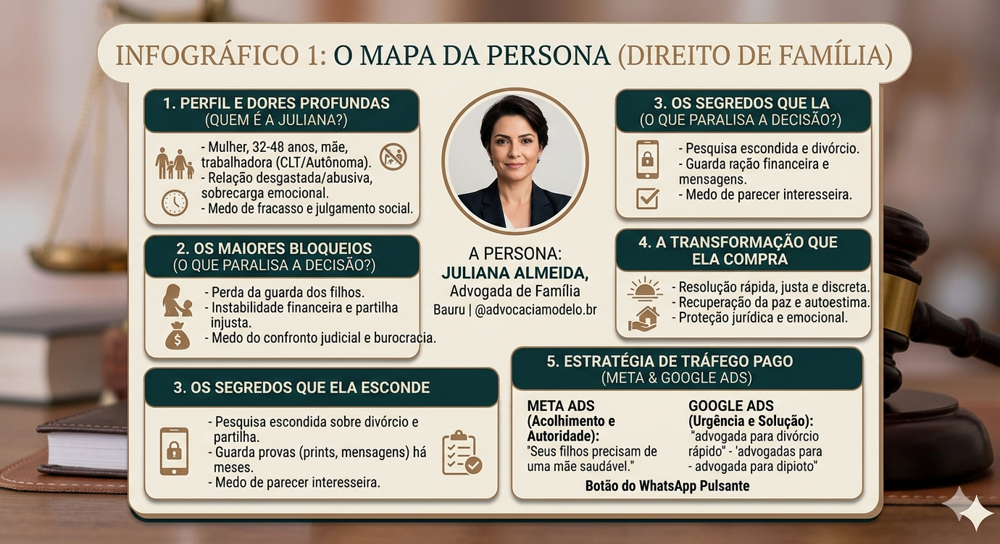
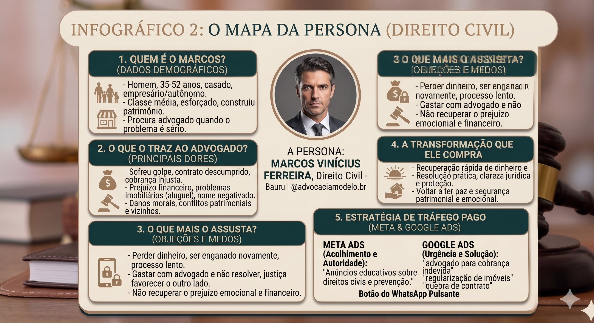

Análise e Diagnóstico de Perfil (Método Retina)
Visão Geral do Perfil Analisado
Estrutura e Bio Atual

Grade de Conteúdos e Posts

1. Foto de Perfil
Dra. Karina, sua foto de perfil atual é excelente. O sorriso espontâneo, os óculos e a postura transmitem um semblante extremamente acolhedor, humano e simpático. Para o nicho de Direito de Família, isso é um diferencial de ouro, pois quebra aquela barreira de "advogado frio" e gera conexão imediata com o cliente que está fragilizado. Sua imagem atual já cumpre perfeitamente esse papel estratégico e deve ser mantida.
2. @, Nome de Busca e Biografia
1. Nome de Usuário (@)
@karinagonzaga.adv MANTER
2. Nome no Perfil (SEO do Instagram)
Karina Gonzaga | Advogada de Família Bauru OTIMIZAR PARA BUSCA
Nova Estrutura de Biografia Sugerida
Estratégia de Cópia: Eliminamos os termos puramente institucionais. O foco agora é direcionado 100% à dor e ao desejo do cliente final (proteção patrimonial, segurança dos filhos e alívio de conflitos).
Otimização de SEO: A inclusão do termo "Advogada de Família Bauru" no seu nome em negrito garante que seu perfil seja indexado e encontrado quando alguém fizer uma pesquisa direta no buscador do Instagram.
3. Destaques (Funil de Vendas Automático)
Diagnóstico Estratégico dos Destaques
Contar com apenas um destaque espalha e dissipa o interesse do público morno que chega pelos anúncios de tráfego pago. Transformaremos o topo do seu feed em uma esteira lógica e estratégica de retenção.
REMANEJAR PARA BASTIDORES
SUBSTITUIR POR ALTO CONTRASTE
CRIAR FLUXO DE ATENDIMENTO
A Nova Arquitetura de Conversão (5 Passos)
Estratégia de Conteúdo & Roteiros de Reels (RETINA)
Gaps de Captação Identificados no Feed
Seus vídeos técnicos são excelentes e sua clareza ao falar é ótima. O ajuste estratégico essencial consiste em remover blocos extensos de textos jurídicos e imagens escuras das capas dos posts, substituindo-os por títulos limpos na paleta de alto destaque (Bege Acetinado e Bronze). Isso ativará as dores silenciosas da persona:
- Identificação Imediata: Tocar no medo oculto de traições, abusos ou perdas patrimoniais sofridas pela mãe ou pelo cônjuge.
- Autoridade Humanizada: Demonstrar o real motivo e propósito de proteger o patrimônio familiar com empatia, desmistificando o juridiquês burocrático.
- Prova Social Qualificada: Compartilhar histórias de superações financeiras e emocionais pós-divórcio e inventários complexos.
- Quebra de Objeções: Diluir barreiras comuns de medo da exposição do processo e lentidão do judiciário.
Os 4 Roteiros Híbridos Fundamentais
Roteiro 1: Identificação Coercitiva (Nicho: Pensão Ocultada)
Objetivo: Chamar a atenção imediata de mães que lidam com a sonegação financeira do ex-parceiro.
Texto na Capa (Hook): O pai do seu filho diz que está desempregado para não pagar pensão?
Roteiro 2: Autoridade Humanizada (Nicho: Missão Familiar)
Objetivo: Conectar pelo propósito e posicionamento humanizado.
Roteiro 3: Alívio de Objeção Judicial (Nicho: Divórcio Consensual)
Objetivo: Desmistificar e quebrar o medo de litígios longos no tribunal.
Roteiro 4: Prevenção de Perdas (Nicho: Patrimônio Oculto)
Objetivo: Alertar sobre fraudes e proteções na divisão patrimonial.
Mapeamento Avançado de Personas
Juliana Almeida, 32 a 48 anos (Mãe e Protetora)
📋 Perfil e Dores Silenciosas
Resumo: Juliana é uma mulher trabalhadora, mãe, que vive sob constante esgotamento emocional devido a um relacionamento infeliz ou abusivo. Ela carrega o peso da família nas costas e é paralisada pela ansiedade e pelo medo de desamparo financeiro, julgamento social e, acima de tudo, pelo medo de afetar negativamente o futuro e a estabilidade emocional dos seus filhos.
🎯 Comportamento de Busca & Desejos
Ela realiza buscas discretas de madrugada no celular sobre divórcio e guarda provas em segredo. Não busca termos técnicos; ela responde a anúncios que prometem acolhimento, proteção jurídica, discrição e paz de espírito. Seu maior desejo é encontrar uma saída humana e segura para recomeçar sua vida com estabilidade.
Infográfico Estratégico — Persona Família

Marcos Vinícius Ferreira, 35 a 52 anos (Trabalhador e Indignado)
📋 Perfil e Dores Silenciosas
Resumo: Marcos Vinícius é um homem trabalhador, casado, pequeno/médio empresário ou profissional autônomo de classe média. Ele construiu seu patrimônio com muito esforço e chega até o escritório movido por um sentimento de profunda revolta e estresse após sofrer um golpe financeiro, quebra de contrato, problemas com imóveis ou negativação indevida.
🎯 Comportamento de Busca & Desejos
Ele ignora o problema até virar uma dor de cabeça insuportável e tem medo de ser enganado ou de gastar dinheiro com processos intermináveis. Marcos não procura um profissional de discursos difíceis; ele escolhe uma advogada que use linguagem simples, transmita firmeza, assuma o controle da situação e ofereça uma solução prática para recuperar seu dinheiro e sua tranquilidade.
Infográfico Estratégico — Persona Civil
